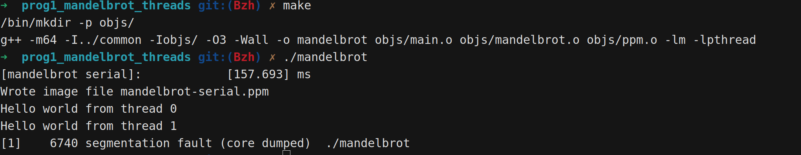

Weekly Report 1 for CMU-15-418
本库包含作业答案，请确保阅读并完全同意重要声明
Abstract
Version 1
TODO
Modify the code in mandelbrot.cpp to parallelize the Mandelbrot generation using two cores. Specifically, compute the top half of the image in thread 0, and the bottom half of the image in thread 1. This type of problem decomposition is referred to as spatial decomposition since different spatial regions of the image are computed by different processors
Workflow
- Init Liunx System(Ubuntu 24.04 LTS), install ISPC, gcc, etc. build the develop environment.
- Learn what is
Mandelbrot set
Here is the details (Latex supported form GPT):
The Mandelbrot set is the set of complex numbers c for which the function
z_{n+1} = z_n^2 + c
does not diverge when iterated from z_0 = 0. In other words, the Mandelbrot set consists of all complex numbers c for which the sequence
z_0 = 0,\ z_1 = c,\ z_2 = z_1^2 + c,\ z_3 = z_2^2 + c,\ \dots
remains bounded, i.e., there exists a constant M such that for all n,
|z_n| \leq M.
- Code review. (mandelbrot.cpp)
Here are the details
Result

make and running output.